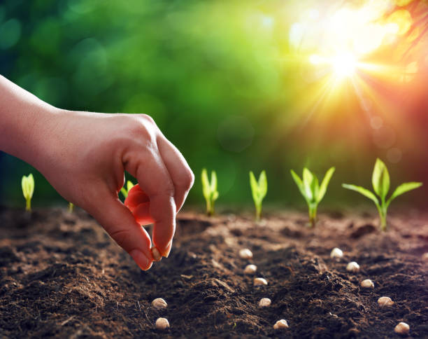

CROP PRODUCTION AND MANAGEMENT
Agriculture is the science that primarily deals with the many procedures or methods used for cultivating various species of plants and livestock farming or animal husbandry based on human needs
Methods of Crop Production and Management
Agriculture is practised by around 70% of the Indian population. As a result, crop production and management are critical to ensuring maximum productivity in the fields. The following are the key agricultural practices involved in crop production and management: Soil Preparation and Seed Sowing Manure Fertiliser addition Irrigation Weed Protection Harvesting Storage
Soil preparation
Before the seeds are planted, the earth is loosened and inclined. Ploughs are used to do this. If there are large lumps in the soil, they are broken up with a hoe. This procedure aerates the soil, allowing the roots to breathe freely. Nutrients and minerals are correctly combined with the soil and rise to the surface. As a result, the soil becomes more fertile and suitable for cultivation
Planting of seeds
Seeds of high quality and free of the virus are collected and sown on prepared land. The seeds should be planted at the right depths and intervals. The following are the numerous ways for sowing seeds: Techniques from the past Broadcasting Dibbling Transplanting Hill descent Seed Dropping Behind the Plough Examine row planting Drilling
manure and fertilizer Application
The soil may lack the necessary nutrients to support plant growth. As a result, manures and fertilisers are put into the soil to improve its fertility and assist plants to thrive. In compost pits, plant and animal debris decompose to produce manure. Fertilizers, on the other hand, are factory-made compounds that contain nutrients for a certain plant. They produce quicker outcomes than manures. However, when applied extensively, they render the land infertile
Irrigation
Crops require water at regular intervals to grow properly. Irrigation is the process of supplying water to plants. Rivers, lakes, and tube wells are all distinct types of irrigation sources. Humans and animals are used in traditional agricultural methods. Moats, chain-pump, dhekli, and rahat are some of the old methods. The sprinkler system and the drip system are two current irrigation strategies. Water is critical for the germination of seeds. It promotes the growth of flowers, fruits, seeds, and plants. As a result, it should be present in great numbers in plants.
Harvesting
When the crop reaches maturity, it is harvested for further processing. This is referred to as harvesting. It is usually manual labour performed with the aid of a sickle. However, mechanical harvesting is now used – machines such as combine harvesters are used to harvest and thresh crops in one pass. Threshing is the process of separating grains from harvested crops. It is either done mechanically or by livestock. Winnowing is the process of separating grains from the chaff. It can be done mechanically or manually